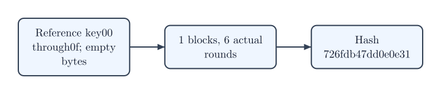
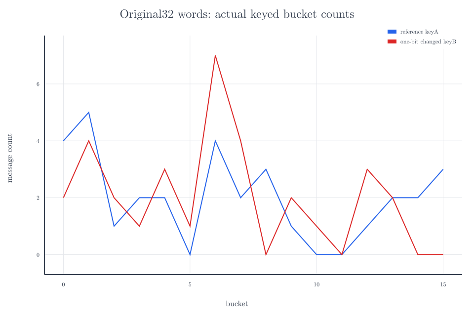
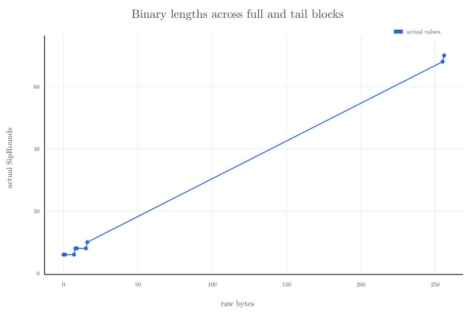
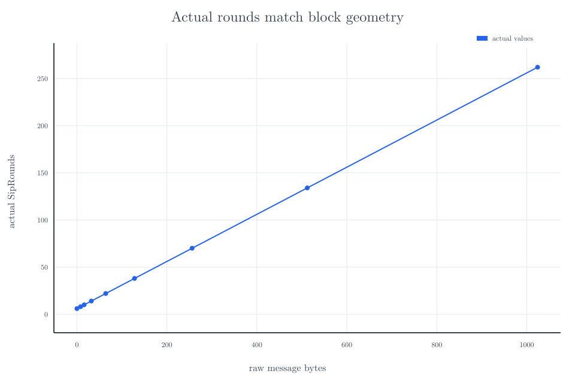

SipHash-2-4: actual keyed ARX rounds
Abstract
A hash table needs a keyed short-input hash to make deliberately chosen bucket collisions difficult for someone without the key. SipHash-2-4 maps raw bytes and a128-bit key to64 bits using additions, rotations and XOR. We expose actual round words, retain the original reference vectors and32-word bucket experiment, and avoid treating a tiny histogram as a security proof.
Mechanism and mathematical scope
Initialize four64-bit words by XORing key halves with fixed constants. Each full little-endian message word is XORed into v3, followed by two SipRounds, then XORed into v0. A compulsory final word contains the remaining bytes and the message length modulo256 in its top byte. After absorbing it, XOR ff into v2 and run four final rounds. The result XORs all four words.
Additions wrap modulo264, rotations preserve all bits, and XOR mixes state dependencies. Even empty input uses one tail block and six rounds. Time is linear in message bytes, with constant working storage unless actual round states are captured. A64-bit output has birthday collisions around232 random evaluations; it is not a collision-resistant content digest. Secret keys mitigate predictable hash-table flooding but do not make collisions impossible.
A tiny actual producing history
The table and native concept diagram read the same producing execution. Every block below is a complete editable C++ program.
#include <dm/dm.hpp>
int main() {
namespace a = dm::algorithms;
namespace g = dm::graphics;
std::filesystem::create_directories("build");
auto r = a::siphash24_trace(a::siphash_example_key(), "");
std::print("| block | finalization | round | actual words before | actual words after |\n| ---: | --- | " "---: | --- | --- |\n");
for (const auto &s : r.history)
std::print("| {} | {} | {} | `{}` | `{}` |\n", s.block, s.finalization,
s.round, s.before, s.after);
g::Diagram concept_diagram(48, 1100);
concept_diagram.node("n0", {0, 0}, "Reference key00 through0f; empty bytes");
concept_diagram.node("n1", {5, 0},
std::format("{} blocks, {} actual rounds", r.blocks,
r.rounds));
concept_diagram.node("n2", {10, 0}, std::format("Hash {:016x}", r.hash));
concept_diagram.edge("n0", "n1").edge("n1", "n2");
concept_diagram.save_svg("build/siphash_tiny.svg");
}| block | finalization | round | actual words before | actual words after |
|---|---|---|---|---|
| 0 | false | 0 | [8388350548712186997, 7737605742629119589, 7746018054687388513, 8893317812261383291] | [7522283016919026821, 4743485663676245980, 17580161316416526130, 6796766745078561810] |
| 0 | false | 1 | [7522283016919026821, 4743485663676245980, 17580161316416526130, 6796766745078561810] | [8435928009599455414, 595096470697677867, 4012794814455513885, 1965391113152180785] |
| 0 | true | 0 | [8435928009599455414, 595096470697677867, 4012794814455514082, 1965391113152180785] | [14137578963774427711, 6123069832690404368, 14104847407630857591, 14788003118732416347] |
| 0 | true | 1 | [14137578963774427711, 6123069832690404368, 14104847407630857591, 14788003118732416347] | [4233341190524162215, 13345655912240565534, 12542700483486550058, 6403266491958657064] |
| 0 | true | 2 | [4233341190524162215, 13345655912240565534, 12542700483486550058, 6403266491958657064] | [4037747081900651848, 2959986960564577801, 12248615837787471073, 13963910552755451554] |
| 0 | true | 3 | [4037747081900651848, 2959986960564577801, 12248615837787471073, 13963910552755451554] | [16661296481354589267, 2398946866924113106, 16351006700818919277, 6266687523117763037] |

The retained original experiment
#include <dm/dm.hpp>
int main() {
namespace a = dm::algorithms;
namespace g = dm::graphics;
std::filesystem::create_directories("build");
auto key = a::siphash_example_key();
std::print("| original reference length | actual hash hex | reference hash hex |\n| ---: | --- | --- " "|\n");
for (std::size_t n : {0, 15})
std::print("| {} | {:016x} | {} |\n", n,
a::siphash24(key, a::siphash_example_message(n)),
n == 0 ? "726fdb47dd0e0e31" : "a129ca6149be45e5");
auto key2 = key;
key2[0] ^= 1;
auto first =
a::siphash_bucket_counts(key, a::siphash_example_words(), 16), second =
a::siphash_bucket_counts(key2, a::siphash_example_words(), 16);
std::vector<double> x, y, z;
std::print("\n| bucket | original keyA | one-bit changed keyB |\n| ---: | ---: | ---: |\n");
for (std::size_t i = 0; i < 16; ++i) {
std::print("| {} | {} | {} |\n", i, first[i], second[i]);
x.push_back(i);
y.push_back(first[i]);
z.push_back(second[i]);
}
auto plot = g::RPlot::create();
plot.lines(x, y, "reference keyA", {37, 99, 235}).lines(
x, z, "one-bit changed keyB", {220, 38, 38}).title(
"Original32 words: actual keyed bucket counts").x_label("bucket").y_label("message count");
plot.save_svg("build/siphash_original.svg");
}| original reference length | actual hash hex | reference hash hex |
|---|---|---|
| 0 | 726fdb47dd0e0e31 | 726fdb47dd0e0e31 |
| 15 | a129ca6149be45e5 | a129ca6149be45e5 |
| bucket | original keyA | one-bit changed keyB |
|---|---|---|
| 0 | 4 | 2 |
| 1 | 5 | 4 |
| 2 | 1 | 2 |
| 3 | 2 | 1 |
| 4 | 2 | 3 |
| 5 | 0 | 1 |
| 6 | 4 | 7 |
| 7 | 2 | 4 |
| 8 | 3 | 0 |
| 9 | 1 | 2 |
| 10 | 0 | 1 |
| 11 | 0 | 0 |
| 12 | 1 | 3 |
| 13 | 2 | 2 |
| 14 | 2 | 0 |
| 15 | 3 | 0 |

Explicit controls
#include <dm/dm.hpp>
int main() {
namespace a = dm::algorithms;
namespace g = dm::graphics;
std::filesystem::create_directories("build");
std::vector<double> x, y;
auto key = a::siphash_example_key();
std::print("| raw byte length | actual hash | blocks | rounds |\n| ---: | --- | ---: | ---: |\n");
for (std::size_t n : {0, 1, 7, 8, 9, 15, 16, 255, 256}) {
auto r = a::siphash24_run(key, a::siphash_example_message(n));
std::print("| {} | {:016x} | {} | {} |\n", n, r.hash, r.blocks, r.rounds);
x.push_back(n);
y.push_back(r.rounds);
}
auto plot = g::RPlot::create();
plot.lines(x, y, "actual values", {37, 99, 235}).points(x, y, {37, 99, 235},
4).title(
"Binary lengths across full and tail blocks").x_label("raw bytes").y_label("actual SipRounds");
plot.save_svg("build/siphash_controls.svg");
}| raw byte length | actual hash | blocks | rounds |
|---|---|---|---|
| 0 | 726fdb47dd0e0e31 | 1 | 6 |
| 1 | 74f839c593dc67fd | 1 | 6 |
| 7 | ab0200f58b01d137 | 1 | 6 |
| 8 | 93f5f5799a932462 | 2 | 8 |
| 9 | 9e0082df0ba9e4b0 | 2 | 8 |
| 15 | a129ca6149be45e5 | 2 | 8 |
| 16 | 3f2acc7f57c29bdb | 3 | 10 |
| 255 | a9c169fec74db21a | 32 | 68 |
| 256 | 999d0526d2a7bfd7 | 33 | 70 |

Actual selected work and sensitivity
#include <dm/dm.hpp>
int main() {
namespace a = dm::algorithms;
namespace g = dm::graphics;
std::filesystem::create_directories("build");
std::vector<double> x, y;
auto key = a::siphash_example_key();
std::print("| sequential binary bytes | actual blocks | actual rounds | 2*(floor(L/8)+1)+4 |\n| ---: | " "---: | ---: | ---: |\n");
for (std::size_t n : {0, 8, 16, 32, 64, 128, 256, 512, 1024}) {
auto r = a::siphash24_run(key, a::siphash_example_message(n));
std::print("| {} | {} | {} | {} |\n", n, r.blocks, r.rounds,
2 * (n / 8 + 1) + 4);
x.push_back(n);
y.push_back(r.rounds);
}
auto plot = g::RPlot::create();
plot.lines(x, y, "actual values", {37, 99, 235}).points(x, y, {37, 99, 235},
4).title(
"Actual rounds match block geometry").x_label("raw message bytes").y_label("actual SipRounds");
plot.save_svg("build/siphash_work.svg");
}| sequential binary bytes | actual blocks | actual rounds | 2*(floor(L/8)+1)+4 |
|---|---|---|---|
| 0 | 1 | 6 | 6 |
| 8 | 2 | 8 | 8 |
| 16 | 3 | 10 | 10 |
| 32 | 5 | 14 | 14 |
| 64 | 9 | 22 | 22 |
| 128 | 17 | 38 | 38 |
| 256 | 33 | 70 | 70 |
| 512 | 65 | 134 | 134 |
| 1024 | 129 | 262 | 262 |

API and interpretation
Reference keys and messages are public deterministic fixtures. Production keys require a secure random source and must stay secret. The32 words and two keys show actual sensitivity and collisions, not empirical uniformity or resistance to an adaptive adversary. No runtime-specific default-hash claims are needed. The legacy hash signature keeps arbitrary-length support; checked run/trace APIs default to a one-million-byte policy.
Reusable producers, fixtures and histories live in the canonical C++ library. Captured records own their values and do not come from a separate report replay. Selected counters and record/scalar policies are specified at their API boundaries; they are not peak-byte or wall-time budgets. Synthetic structural inputs are controlled fixtures for these mechanisms.
References
- Aumasson and Bernstein (2012), SipHash: a fast short-input PRF
- Reference implementation and official vectors
Verified in the shared ten-document batch: 48 scoped native cases;20 directly
instrumented ASan/UBSan cases;77 executable public examples;252/252 full-file
definitions across21 scopes;10 hovers;1843 independent records/11127
checks;frozen comparisons across all ten families with translation-cancellation
and strict-parser corrections recorded;11 checkout/installed standalone headers
and linked ten-family consumer;40 executed programs and40 inspected figures with
both exports. Receipts: build/mepml-conversion/batch-354-363/.